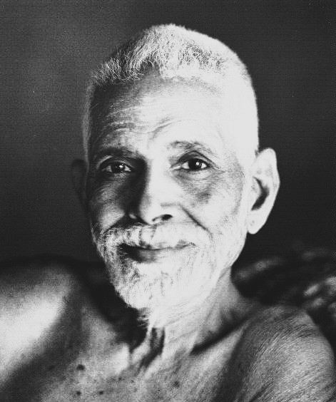

Who Was Ramana Maharshi?
Ramana Maharshi, born Venkataraman Iyer, was a modern Indian sage and philosopher who lived from 1879 to 1950. He is remembered as one of the most influential figures in twentieth-century Advaita Vedanta, celebrated less for producing an extensive body of written philosophical argument than for a distinctive and remarkably direct method of pointing seekers toward Self-realization through the practice of Self-inquiry .
Ramana Maharshi is especially associated with the simple but demanding question "Who am I?", which he presented not as an invitation to philosophical speculation but as a practical technique for tracing the sense of individual selfhood back to its ultimate source. Rather than developing elaborate metaphysical arguments in the manner of classical Vedanta commentators, his teaching consistently redirected seekers away from abstract doctrine and back toward direct investigation of their own immediate experience.
Following a spontaneous and profound spiritual experience at the age of sixteen, Ramana Maharshi left his family home and traveled to the sacred hill of Arunachala in Tamil Nadu, where he remained for the rest of his life, eventually becoming the center of a growing ashram community that attracted seekers from across India and, in time, from around the world.
Because Ramana Maharshi wrote comparatively little himself, with most surviving texts compiled from his verbal responses to visitors' questions, scholars and devotees alike continue to debate how best to systematize his teaching within the broader history of Advaita philosophy. His importance nonetheless remains considerable, since his practical method of Self-inquiry and his emphasis on silent presence as a form of teaching went on to influence modern nondual spirituality far beyond the boundaries of traditional Indian philosophical scholarship.
Ramana Maharshi: Quick Facts
- Name — Ramana Maharshi (Venkataraman Iyer, Bhagavan)
- Period — 1879–1950
- Born in — Tiruchuli, Tamil Nadu, India
- Philosophical period — Modern Indian philosophy
- Associated with — Advaita Vedanta and Self-inquiry
- Known for — Teaching through the question "Who am I?" and through silence
- Major works — Nan Yar (Who Am I?), Ulladu Narpadu, and Upadesa Saram
- Residence — Arunachala hill, Tiruvannamalai, Tamil Nadu
- Central practice — Atma Vichara, or Self-inquiry
- Historical importance — Major influence on modern Advaita and nondual spiritual teaching
Ramana Maharshi and the Modern Revival of Advaita

Ramana Maharshi's life and teaching unfolded during a period of significant renewal and reinterpretation of Indian spiritual traditions, a time when figures such as Sarvepalli Radhakrishnan were presenting Vedanta philosophy to a global academic audience even as more directly experiential and devotional currents continued to flourish within India's own regional religious life.
The town of Tiruvannamalai, and the hill of Arunachala that rises above it, had already been venerated for centuries within Tamil Shaivite tradition as a place of profound spiritual significance, associated with the god Shiva in the form of a mountain of fire, and this deeply rooted regional sacred geography shaped the entire course of Ramana Maharshi's life once he arrived there as a teenager.
Unlike the more scholastic tradition of Sanskrit Vedanta commentary associated with figures such as Adi Shankaracharya, Ramana Maharshi's approach emerged largely outside formal institutional education, reflecting a broader and very old current within Indian religious life in which spiritual authority could rest on direct realization and the recognized presence of a living sage rather than on scholarly credentials or systematic textual argument.
In the environment associated with Ramana Maharshi, philosophical reflection therefore combined closely with lived, embodied spiritual practice, treating the presence of a realized teacher, and the practical technique of inquiry he offered, as more central to genuine philosophical progress than the mastery of scriptural commentary or formal argument alone.
Who Was Ramana Maharshi and What Did He Do?
Ramana Maharshi was born Venkataraman Iyer in the town of Tiruchuli, in the Tamil Nadu region of South India, into a modest Brahmin family. As a boy, he showed little particular interest in formal religious study, and nothing in his early life obviously anticipated the profound transformation that would soon reshape the entire course of his existence.
At the age of sixteen, while alone in his uncle's house, Ramana Maharshi underwent a sudden and intense fear of death, which he responded to not with panic but with a spontaneous and deliberate investigation: lying still and mentally simulating death, he directed his attention inward to discover what, if anything, would actually cease to exist. This investigation produced a profound realization that the body could die while an underlying awareness, the true Self, remained entirely untouched by death, an experience that permanently and irreversibly transformed his sense of identity.
Shortly after this experience, Ramana Maharshi left his family home without explanation and traveled to Arunachala, the hill he had long revered from descriptions in devotional literature, where he remained for the rest of his life, initially living in near-total silence and withdrawal in caves and temples on the hill before gradually attracting a growing community of devotees drawn by his evident spiritual realization.
Over the following decades, a permanent ashram community, known as Sri Ramanasramam, developed around him at the foot of Arunachala, drawing visitors from across India and, following increased international attention including the published accounts of Western seekers such as Paul Brunton, from many other countries as well.
Ramana Maharshi remained at Arunachala until his death in 1950, maintaining remarkable equanimity even during his final illness, reportedly reassuring grieving devotees that he was not going anywhere, since the true Self he had always pointed them toward could never depart or be confined to any single location or body.
What Did Ramana Maharshi Believe?
Ramana Maharshi's philosophy rests on the core Advaita Vedanta conviction that the individual self, ordinarily experienced as a separate and limited entity bound to a particular body and mind, is in ultimate reality identical with an unlimited, ever- present, and unchanging Self, corresponding to the classical Vedanta concept of Atman.
Unlike classical commentators who developed this position primarily through detailed textual interpretation of the Upanishads and Brahma Sutras, Ramana Maharshi consistently insisted that this truth could be verified directly through careful attention to one's own immediate experience, arguing that the sense of being a limited, separate individual arises only through habitual, unexamined identification with the body and mind rather than reflecting any genuine underlying reality.
Central to this philosophy is the claim that Self-realization is not the acquisition of some new state or possession but simply the removal of a false identification that obscures what is already, and has always been, fully present; Ramana Maharshi frequently compared this process to removing an obstruction rather than achieving a distant goal, since the Self one seeks is, in his teaching, never actually absent or separate from the seeker.
This practical, experience-centered orientation shaped Ramana Maharshi's entire approach to teaching, leading him to redirect nearly every philosophical or theological question posed to him back toward the practical investigation of who, precisely, was asking the question in the first place, treating this redirection itself as more valuable than any theoretical answer he might otherwise have supplied.
Scholars of Indian philosophy continue to debate how closely Ramana Maharshi's teaching should be aligned with the classical Advaita of Shankaracharya, given his comparative lack of engagement with formal scriptural commentary, but his work is consistently recognized as one of the most influential and distinctively practical expressions of nondual philosophy to emerge from modern India.
What Did Ramana Maharshi Teach About Surrender?
Although Ramana Maharshi is most famous for the method of Self-enquiry, he also taught complete surrender as a central spiritual path. This approach is closely connected with the Indian tradition of bhakti, or devotion, in which the individual gives up the sense of independent ego and places oneself entirely in the hands of God or the highest reality.
For Ramana Maharshi, genuine surrender did not simply mean asking a deity for protection, success, or spiritual rewards. Complete surrender required the gradual abandonment of the possessive sense of "I" and "mine" and the relinquishment of the belief that the individual ego is the ultimate independent agent behind life and action. In this sense, surrender was directed fundamentally against the same ego-identification examined through Self-enquiry.
Ramana frequently presented Self-enquiry and surrender as two paths suited to different temperaments. Through enquiry, the seeker investigates the source of the individual "I" until the ego loses its apparent independence. Through surrender, the seeker gives up that same ego to the divine or higher reality. Although the practical approaches differ, both are directed toward the dissolution of the sense of separate selfhood.
This understanding also explains why Ramana Maharshi did not regard jnana, or spiritual knowledge, and bhakti, or devotion, as ultimately opposed. At their highest point, both involve the disappearance of ego-centered individuality. The difference lies primarily in the starting point: one path begins with investigation into the nature of the self, while the other begins with love, trust, and devotion toward the divine.
Ramana Maharshi's teaching on surrender therefore gives his philosophy a broader character than a purely intellectual interpretation of Advaita Vedanta might suggest. Self-knowledge, devotion, meditation, and disciplined spiritual practice could all serve the movement away from ego-identification and toward abiding in the Self, though he consistently emphasized that their deepest purpose was the realization of the same underlying reality.
Atma Vichara: Ramana Maharshi's Practice of Self-Inquiry
Atma Vichara, or Self-inquiry, is the practice most closely and consistently associated with Ramana Maharshi, consisting of persistently directing attention toward the source of the sense of individual selfhood by repeatedly asking the question "Who am I?"
Rather than treating this question as an invitation to produce a conceptual answer, such as a name, occupation, or philosophical definition, Ramana Maharshi insisted that the question should be used to trace the sense of "I" back toward its actual source, setting aside every answer that arises as still belonging to the level of thought rather than to the underlying awareness from which all thoughts, including the thought "I," ultimately emerge.
Central to this practice is what Ramana Maharshi called the "I"-thought, the first and most fundamental thought from which he taught that every subsequent thought arises; by patiently and persistently tracing this "I"-thought back to its origin, rather than following it outward into further chains of thought and identification, the practitioner is said to arrive at direct recognition of the true Self underlying all experience.
Ramana Maharshi presented Self-inquiry as accessible to practitioners of any background or formal religious affiliation, requiring no elaborate ritual, scriptural study, or doctrinal commitment, a feature that distinguished his teaching method sharply from more traditionally scholastic or ritually embedded approaches to Vedanta and contributed significantly to its wide appeal among modern seekers, both Indian and Western.
Although Self-inquiry remains Ramana Maharshi's most characteristic teaching, he also acknowledged other traditional paths, including devotion and surrender to a personal God, as valid approaches for practitioners for whom direct inquiry proved too demanding, while consistently maintaining that Self-inquiry represented the most direct route to Self-realization for those capable of sustained, honest investigation.
Mauna: Ramana Maharshi's Teaching Through Silence
Mauna, or silence, occupies an unusually central and distinctive place within Ramana Maharshi's approach to teaching, functioning not merely as an absence of speech but as what he described as the highest and most direct form of spiritual instruction available.
Ramana Maharshi taught that his own presence, as one permanently established in direct recognition of the Self, could communicate understanding to a sufficiently receptive visitor more effectively and more directly than any verbal explanation, describing this transmission as occurring through a kind of silent, wordless communion between the realized teacher and the sincere seeker.
Many visitors to Arunachala reported experiencing periods of profound inner stillness or spontaneous insight simply through sitting in Ramana Maharshi's physical presence, without any formal instruction being given, an experience he and his devotees generally understood as evidence of this silent mode of teaching operating alongside, and often more powerfully than, his verbal responses to specific questions.
This emphasis on silence connects directly to Ramana Maharshi's broader philosophical position that the Self is not fundamentally an object that can be adequately described or transmitted through concepts and language, since any verbal formulation necessarily operates at the level of thought, while the Self itself is understood to be the ever-present awareness underlying and preceding all thought and language.
Nan Yar: The "Who Am I?" Text
Nan Yar, meaning "Who am I?" in Tamil, stands as Ramana Maharshi's most widely read and philosophically significant text, though it was not composed by him directly as a written treatise but instead compiled from his verbal answers to a series of questions posed by an early devotee, Sivaprakasam Pillai.
This compact text systematically addresses fundamental questions concerning the nature of the Self, the practice of Self-inquiry, the nature of the mind and its thoughts, and the relationship between Self-inquiry and other traditional spiritual practices, presenting Ramana Maharshi's core teaching in an unusually concise and directly practical form.
Alongside Nan Yar, Ramana Maharshi's other major recorded works include Ulladu Narpadu, or "Forty Verses on Reality," a poetic exposition of Advaita philosophy composed at the request of devotees, and Upadesa Saram, or "Essence of Instruction," a shorter verse composition addressing different traditional paths of spiritual practice and their relative value.
Because these texts originated largely through the requests and questions of devotees rather than from Ramana Maharshi's own independent initiative to compose systematic philosophy, they preserve something of the immediate, dialogical, and practically oriented character of his teaching method, remaining significantly different in style and structure from the more extended scholastic commentaries characteristic of classical Vedanta literature.
Ramana Maharshi Compared with Adi Shankaracharya
Ramana Maharshi is frequently discussed alongside Adi Shankaracharya, the medieval founder of classical Advaita Vedanta, since both thinkers arrived at fundamentally the same non-dualist conclusion regarding the identity of the individual self with ultimate reality.
Where Shankaracharya developed and defended this position primarily through detailed Sanskrit commentary on the Upanishads, the Brahma Sutras, and the Bhagavad Gita, engaging extensively with rival philosophical schools through formal argument, Ramana Maharshi's own teaching emerged largely independent of this scholastic tradition, expressed instead through direct verbal instruction, brief verse composition, and, above all, silent presence.
This difference in method has led some scholars to describe Ramana Maharshi's contribution as primarily practical and experiential rather than strictly philosophical in the technical sense, while others argue that his teaching represents a genuinely original and philosophically significant reformulation of Advaita, distinguished by its emphasis on direct self-investigation over textual authority.
Despite these methodological differences, both thinkers share the underlying conviction that ignorance of one's true nature, rather than any inherent limitation of reality itself, constitutes the fundamental human problem, and that removing this ignorance, rather than acquiring some new spiritual attainment, constitutes the essence of liberation.
Ramana Maharshi's Influence on Modern Nondual Spirituality
The publication of the British writer Paul Brunton's 1934 book A Search in Secret India, which included a widely read account of his visit to Ramana Maharshi at Arunachala, played a decisive role in introducing Ramana Maharshi's teaching to an international audience well beyond the boundaries of Tamil Nadu and India more broadly.
Following this increased international attention, a growing stream of Western seekers traveled to Arunachala throughout the following decades, and Ramana Maharshi's recorded teachings were increasingly translated and studied outside India, contributing to a broader modern interest in Advaita Vedanta and nondual philosophy among audiences with little background in traditional Sanskrit scholarship.
Ramana Maharshi's distinctive emphasis on direct, practical Self-inquiry, largely detached from specific religious ritual or doctrinal requirement, later proved especially influential within what is sometimes called the neo-Advaita movement, a diverse and loosely organized set of modern spiritual teachers who present nondual realization in simplified and often explicitly non-religious terms accessible to a broad, largely secular contemporary audience.
Through this extended influence, Ramana Maharshi's teaching continues to shape how Self-inquiry and nondual philosophy are understood and practiced well beyond traditional Advaita Vedanta circles, making him one of the most significant bridge figures between classical Indian philosophy and contemporary global spiritual practice.
Ramana Maharshi: Main Philosophical Ideas
Because Ramana Maharshi's teaching was expressed largely through direct verbal instruction and silent presence rather than extended written treatise, his central ideas are often summarized under a small number of key themes drawn from recorded conversations and his brief surviving texts.
The Self Is Ever-Present
Ramana Maharshi taught that the true Self is never actually absent or attained anew, since Self-realization consists only in removing the false identification that obscures it.
Self-Inquiry as Direct Practice
The practice of persistently asking "Who am I?" traces the sense of individual selfhood back to its source, beneath every conceptual answer that arises.
The "I"-Thought as Root of the Mind
Ramana Maharshi identified the "I"-thought as the first and most fundamental thought from which all subsequent thoughts and mental activity arise.
Silence as the Highest Teaching
Ramana Maharshi regarded his own silent presence as capable of communicating understanding more directly than verbal instruction alone.
Teaching Through Direct Experience
Rather than relying primarily on scriptural commentary, Ramana Maharshi consistently redirected questions back toward the seeker's own immediate investigation of experience.
What Do We Actually Know About Ramana Maharshi's Philosophy?
Because Ramana Maharshi lived within well-documented modern history and was closely observed by numerous devotees and visitors who recorded his teachings, his biography is unusually well established compared with many earlier philosophers; the more significant debates concern how to interpret and systematize his teaching rather than uncertainty about the events of his life.
Relatively Well-Attested
- Ramana Maharshi was born in Tiruchuli in 1879 and died at Arunachala in 1950.
- He underwent a transformative death-experience at age sixteen before traveling to Arunachala.
- He lived at Arunachala for the remainder of his life, where Sri Ramanasramam developed around him.
- His recorded teachings include Nan Yar, Ulladu Narpadu, and Upadesa Saram.
- Paul Brunton's writing helped introduce his teaching to an international audience.
Widely Discussed Interpretive Themes
- His central practice of Self-inquiry and the nature of the "I"-thought.
- His teaching through silence as a direct mode of spiritual transmission.
- His relationship to classical Advaita Vedanta as developed by Shankaracharya.
Areas of Ongoing Scholarly Debate
- How closely Ramana Maharshi's teaching should be classified within classical Advaita Vedanta versus treated as a distinctive modern development.
- How his emphasis on direct experience over textual authority should be assessed in relation to the broader Indian commentarial tradition.
- The extent to which later neo-Advaita teachings accurately represent his own original teaching.
- How to interpret specific episodes recorded in devotional accounts of his life, given the reverence in which they were composed.
Why Is Ramana Maharshi Important in Philosophy?
Ramana Maharshi is important because he offered one of the most direct and practically accessible expressions of Advaita philosophy in modern history, demonstrating that the central insight of non-dualist Vedanta could be approached through immediate self-investigation rather than solely through extended scholarly training.
His philosophical legacy raises a fundamental question that remains significant for the philosophy of mind and the philosophy of religion: Can direct investigation of one's own immediate experience reveal truths about the nature of the self that discursive philosophical argument alone cannot fully establish?
This question has continued to shape discussions in comparative philosophy and contemplative studies, as later thinkers examined how Ramana Maharshi's method of Self-inquiry relates to both classical Vedanta epistemology and contemporary philosophical and psychological interest in the nature of self-awareness.
Ramana Maharshi's importance therefore does not depend on resolving every scholarly debate about how to classify his teaching within formal philosophical history. His significance comes from his enduring demonstration that the deepest questions of Vedanta philosophy remain directly accessible to sincere practical investigation, a legacy that continues to influence Advaita and nondual spirituality worldwide.
Ramana Maharshi Explained Simply
Ramana Maharshi was a modern Indian sage who taught Self-inquiry, the practice of asking "Who am I?", as a direct path to realizing the true, ever-present Self beneath the false identification with body and mind.
Instead of relying primarily on scriptural argument, Ramana Maharshi's philosophy insists that Self-realization can be approached directly through sincere self-investigation, and that his own silent presence could communicate this understanding as effectively as verbal instruction.
His practice of Atma Vichara and his teaching through silence remain among the most influential contributions of modern Indian philosophy to the wider history of Advaita Vedanta and contemporary nondual spirituality.
- Philosopher/Sage: Ramana Maharshi
- Period: 1879–1950
- Tradition: Advaita Vedanta
- Major practice: Atma Vichara, or Self-inquiry
- Central concern: Direct realization of the true Self
- Associated teaching method: Mauna, or silence
- Major text: Nan Yar (Who Am I?)
- Residence: Arunachala, Tiruvannamalai
A Principle Central to Ramana Maharshi's Teaching
“Who am I?”
Frequently Asked Questions About Ramana Maharshi
Who was Ramana Maharshi?
Ramana Maharshi was a modern Indian sage who taught Self-inquiry as a direct path to Self-realization, living most of his life at the hill of Arunachala in Tamil Nadu and influencing modern Advaita and nondual spirituality worldwide.
What is Ramana Maharshi famous for?
Ramana Maharshi is famous for his practice of Self-inquiry, summarized in the question "Who am I?", his teaching through silence, and his life at Arunachala, which drew seekers from India and around the world.
What did Ramana Maharshi believe?
Ramana Maharshi believed that the true Self is ever-present and unchanging, that ordinary experience of being a separate, limited individual arises from false identification with the body and mind, and that Self-realization is achieved by removing this false identification through direct inquiry.
What is Self-inquiry in Ramana Maharshi's teaching?
Self-inquiry, or Atma Vichara, is Ramana Maharshi's central practice of persistently asking "Who am I?" to trace the sense of individual selfhood back to its source, revealing the ever-present, unchanging Self beneath the false identification with body and mind.
Why did Ramana Maharshi teach through silence?
Ramana Maharshi regarded silence, or mauna, as his highest and most direct form of teaching, holding that his own presence as one established in the Self could transmit understanding beyond what words could convey.
What is the "I"-thought?
The "I"-thought is what Ramana Maharshi identified as the first and most fundamental thought, from which he taught that every subsequent thought and sense of individual identity arises.
What is Nan Yar?
Nan Yar, meaning "Who am I?" in Tamil, is Ramana Maharshi's most widely read text, compiled from his verbal answers to questions posed by his early devotee Sivaprakasam Pillai.
How is Ramana Maharshi different from Adi Shankaracharya?
Shankaracharya developed Advaita Vedanta through detailed Sanskrit commentary and formal philosophical argument, while Ramana Maharshi taught largely outside that scholastic tradition, expressing his teaching through direct verbal instruction, brief verse, and silent presence.
How did Ramana Maharshi influence modern spirituality?
Following Paul Brunton's widely read account of visiting him, Ramana Maharshi's teaching reached an international audience and later influenced the modern neo-Advaita movement, which presents nondual realization in simplified, largely non-religious terms.
Why is Ramana Maharshi important today?
Ramana Maharshi remains important because his practical method of Self-inquiry continues to shape modern Advaita and nondual spirituality, offering a direct approach to Vedanta philosophy accessible to seekers without formal scholarly training.
Related Indian Philosophers
Ramana Maharshi belongs to the wider tradition of Advaita Vedanta and modern Indian philosophy. Explore philosophers who shaped and responded to many of the same questions about the Self and ultimate reality.
Philosophy Branches Connected to Ramana Maharshi
Ramana Maharshi's philosophical legacy is particularly important for metaphysics, where philosophers investigate the nature of the self, and for epistemology, which examines how direct experience relates to genuine knowledge.
Why Ramana Maharshi Still Matters
Ramana Maharshi did not leave behind an extensive philosophical treatise in the manner of classical Vedanta commentators, yet his direct method of Self-inquiry and his teaching through silence produced one of the most widely practiced and influential expressions of Advaita philosophy in the modern world.
Yet the questions associated with Ramana Maharshi remain fundamental to philosophy: What is the true nature of the self that experiences? Can direct inquiry into immediate experience reveal truths that argument alone cannot secure? What can silence itself communicate that words cannot?
The practice of Self-inquiry he taught across decades of life at Arunachala transformed these questions into one of the most accessible and enduring expressions of nondual philosophy produced anywhere in the modern era. His emphasis on direct experience, the ever-present Self, and teaching through silence made Ramana Maharshi one of the most significant philosophical figures of modern India.
Explore Great Philosophers